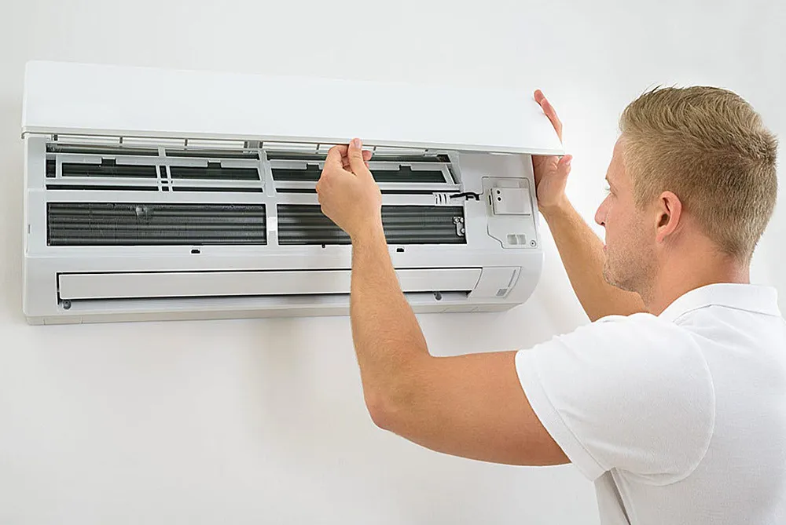

Tarsus'un Bunaltıcı Sıcağında Klima Arızası
Özellikle yaz ayları geldiğinde Tarsus'un meşhur, insanı bunaltan sıcağı ve nemi hepimizi yoruyor. Serinlemek umuduyla klimanın düğmesine basıp sadece ılık bir rüzgar hissetmek, en can sıkıcı anlardan biridir. Dış motorun çalıştığını duyarsınız, iç ünite üfler ancak beklediğiniz o buz gibi hava bir türlü gelmez.
Bu durum sadece konforunuzu bozmakla kalmaz; bebekli aileler, yaşlılar ve hastalar için evdeki huzuru kaçıran bir strese dönüşür. "Klimam tamamen mi bozuldu?", "Bana büyük bir masraf mı çıkacak?" veya "Bu sıcakta hızlı ve dürüst bir tamirciyi nereden bulacağım?" diye düşünerek haklı bir paniğe kapılabilirsiniz.
İçiniz rahat olsun. Sertler Soğutma olarak Tarsus'ta klima çalışıyor ama soğutmuyor şikayetiyle tamirci arayan yüzlerce komşumuzun bu endişelerini çok iyi biliyoruz. Tarsus merkez ve çevre köyler dahil olmak üzere, her noktaya sunduğumuz hızlı klima tamiri servisimizle o zor anınızda "Biz hallederiz" demek için varız. Eşyalarınız da keseniz de bizimle güvendedir.
Klimanız Neden Soğutmaz? Evde Deneyebileceğiniz Basit Çözümler
Bazen klimanızın soğutmamasına neden olan durum korkutucu bir arıza değildir. Ufak bir kumanda ayarı veya gözden kaçan bir detay, cihazı tamamen bozulmuş gibi gösterebilir. Bu noktada en kötü senaryoyu düşünüp boşuna strese girmenize hiç gerek yok.
Klimanızın neden soğutmadığına dair evde yapabileceğiniz pratik çözümleri Tarsus'taki müşterilerimiz için adım adım özetlemek istedik. Bizi aramadan önce cihazınıza zarar vermeden yapabileceğiniz bu basit kontroller, bazen sorunu anında çözer. Amacımız her zaman önce dürüstçe bilgilendirmek ve cebinizden gereksiz yere para çıkmasını önlemektir.
Kumanda Ayarlarınızı Doğru Yaptığınızdan Emin Olun
Müşterilerimizin evlerinde sıkça karşılaştığımız ve çoğunlukla gülümseyerek çözdüğümüz durumlardan biri kumanda ayarlarıdır. Özellikle ilkbahardan yaza geçerken klimanın çalışma modunu değiştirmeyi unutabiliyoruz. Kışın kullanılan ısıtma amaçlı "Güneş" ikonundan çıkıp soğutma moduna geçilmediğinde, sistem odayı serinletmez.
Lütfen hemen klimanızın kumandasına bakın ve ekranda kar tanesi ("Cool") ikonunun aktif olup olmadığını kontrol edin. Eğer kış modundaysa veya nem alma konumundaysa, Mod (Mode) tuşuna basarak cihazı doğru ayara getirin. Ardından sıcaklık hedefini ideal değer olan 22 dereceye düşürüp 5 dakika kadar sistemin toparlanmasını bekleyin.
Toz Filtrelerini Düzenli Aralıklarla Temizliyor musunuz?
Tarsus'un tozu ve Çukurova'nın yüksek nemi bir araya geldiğinde cihazınızın nefes yolları çok çabuk kapanır. Teknik alet kullanmadan yapabileceğiniz en önemli kontrol, klimanın iç ünitesinde bulunan toz filtrelerine bakmaktır. Kapkara, çamurlaşmış bir toz tabakası klimanın buz gibi havayı odaya üflemesine engel olur.
Bu tıkanıklık cihazınızın motorunu aşırı derecede zorlar, faturanızı şişirir ve odayı bir türlü soğutamaz. Ön kapağı usulca kaldırıp ağ yapılı plastik filtreleri yerinden çıkarın. Tozla kaplıysa, duş başlığının altında sadece ılık su kullanarak nazikçe yıkayın. Temizlenen filtreleri gölgede kurutup yerine taktığınızda klimanızın performansı sizi yeniden şaşırtabilir.
Klimanın Soğutmamasının Temel Teknik Nedenleri
Yukarıdaki adımları eksiksiz yaptığınız halde sorun düzelmiyorsa, klimanızın hassas dengesinde bir arıza meydana gelmiş olabilir. Klimalar kapalı devre sistemle çalışan, gaz basınçlarına bağlı komplike makinalardır. Bu aşamadan sonra sisteme kendi başınıza teknik müdahale etmemeniz, daha büyük masraflar açılmaması adına kritiktir.
Size en yakın Tarsus klima servisi olarak, cihazınız soğutmuyor ise sorunun altında yatan teknik nedenleri en şeffaf haliyle bilmenizi isteriz. Yılların getirdiği saha tecrübesiyle, en sık rastlanan problemleri sizin için kafa karıştırmadan listeledik.
Klima Gazının Eksilmesi veya Kaçağı
Aylarca aralıksız çalışan soğutma sistemlerinde titreşimlere bağlı olarak boru bağlantılarında ufak esnemeler yaşanabilir. Bu görünmez açıklıklar, cihazın asıl işlevi olan iklimlendirmeyi sağlayan soğutucu gazın yavaşça dışarı sızmasına neden olur. Sistemde yeterli basınçta gaz yoksa motor kusursuz çalışsa da dışarıya sadece vantilatör gibi ılık rüzgar üflenir.
Eğer klimanızda gaz dolumu gerektiren bir durum ve soğutma arızası varsa, bu ancak profesyonel manometrelerle ölçülebilir. Adresinize ulaştığımızda cihazın basınç değerlerini teknik olarak inceliyoruz. Sızıntı olan noktayı güvenle kapatmadan kesinlikle gaz basıp günü kurtarmıyoruz. Kaçağı onardıktan sonra fabrika standartlarında gaz basarak cihazı size ilk günkü performansıyla teslim ediyoruz.
Düzenli bakım ve doğru kullanım, arıza riskini azaltır ve klimanızın soğutma performansını artırır.
Dış Ünite veya Kompresör Arızaları
Bazen sorun klimanın evdeki iç kısmında değil, dış duvarda veya balkondaki kompresör ünitesindedir. Sistemin kalbi sayılan bu ana motor, elektrik şebekesindeki dalgalanmalar sebebiyle devreye giremeyebilir. Aşırı sıcaklarda fan motorunun sıkışması veya motoru tetikleyen küçük "kapasitör" parçasının arızalanması çok sık görülen vakalardır.
Dış ünitenizden hiç ses gelmediğinde hemen panikleyip masraf kapısı açıldı sanmayın. Çoğu kapasitör arızası uygun bütçelerle dakikalar içinde giderilir. Biz eve geldiğimizde sorunu büyüterek değil, tam aksine dürüstçe nokta atışı tespit ederek ve en uygun maliyetli parçayı değiştirerek sorunu çözeriz.
Tarsus ve Çevre Köylere Hızlı Klima Servisi: Sertler Soğutma
Bölgemizin yakıcı temmuz sıcağında klimasız bir odada beklemenin zorluğunu, burada sizinle aynı havayı soluyan Tarsuslu esnaflar olarak hücrelerimize kadar biliyoruz. Tek amacımız gelip basit bir onarım yapmak değil; o stresli ve sıcak anınızda yanınızda bitip, size "Oh, geçmiş olsun" dedirtebilmektir.
Sadece şehir merkeziyle sınırlı kalmıyor; ulaşımın zor olduğu veya diğer firmaların gitmediği çevre köylere dahi söz verdiğimiz gün içerisinde gidiyoruz. Mahalle ayrımı yapmaksızın hiçbir insanımızı çaresiz bırakmamak en büyük prensibimizdir. Müşterimizin derdi bizim kendi evimizin derdidir.
Neden İşinizi Gönül Rahatlığıyla Bize Teslim Etmelisiniz?
Biz sadece yazın ortaya çıkıp kışın kaybolan firmalardan değiliz. Sertler Soğutma olarak mahallenizde yüz yüze baktığınız, her sabah selamlaştığınız o güvenilir aile esnafıyız. Kurumsal firmaların o robotik tavırlarından uzak, saygılı ve sizi gerçekten anlayan bir üslupla kapınızı çalarız.
Evinize veya iş yerinize misafir olduğumuzda eşyalarınızı özenle korur, yapılacak her işlemi baştan eksiksiz izah ederiz. Size anlamadığınız teknik terimlerle süslü gereksiz fiyatlar çıkarmayız. Hangi malzeme değişecekse, işçilikle beraber tamamını şeffafça sunarız. Biliyoruz ki esnafı esnaf yapan dürüstlüğüdür ve en güzel reklamı gülen yüzle ayrılan müşteri yapar.
Sıcaklarda Mağdur Olmayın, Yardımımıza Güvenin!
Sıcaklar iyice bastırdığında klimanız aniden pes ederse, uykunuz kaçıp huzurunuz bozulmasın. Yukarıda bahsettiğimiz basit sorunları elediyseniz cihazı daha fazla zorlamayın. Gözünüz asla arkada kalmadan bizi arayabilirsiniz.
Dürüstçe hesaplanmış maliyetlerimiz, garantili parça değişimlerimiz ve tecrübemizle en kısa sürede kapınızdayız. "Biz hallederiz" derken sadece arızayı kastetmiyoruz, o anki telaşınızı ve stresinizi de soğutuyoruz.
Tüm klima bakımları veya buzdolabı arızaları hakkında şeffaf bilgi sahibi olmak ve hızlıca tamir kaydı oluşturmak için sitemizde bulunan Klima/Buzdolabı Tamircisi sayfamızı dilediğiniz an ziyaret edebilirsiniz. Klima arızasını bize bırakın, siz evinizde yaz mevsiminin ferahlığını yaşayın.